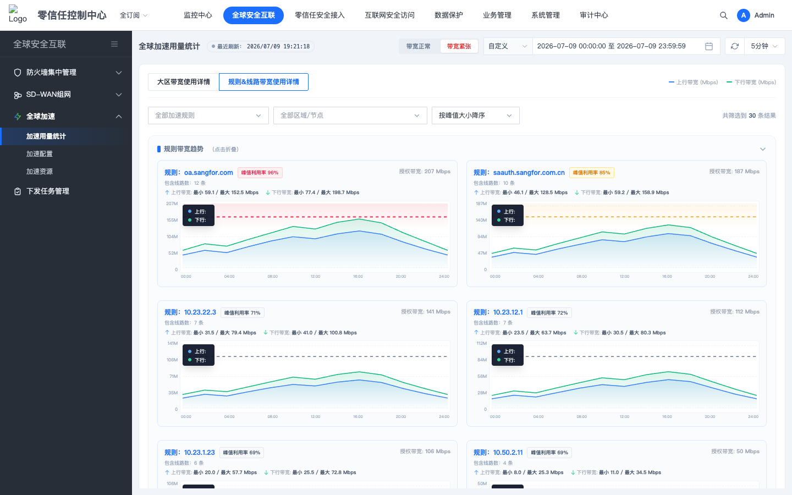
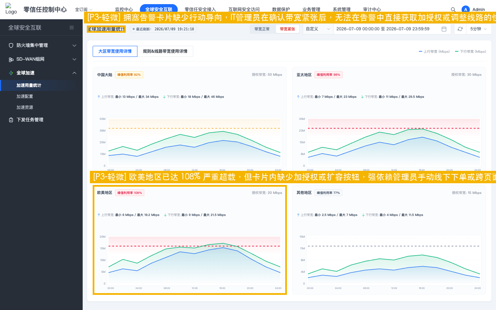
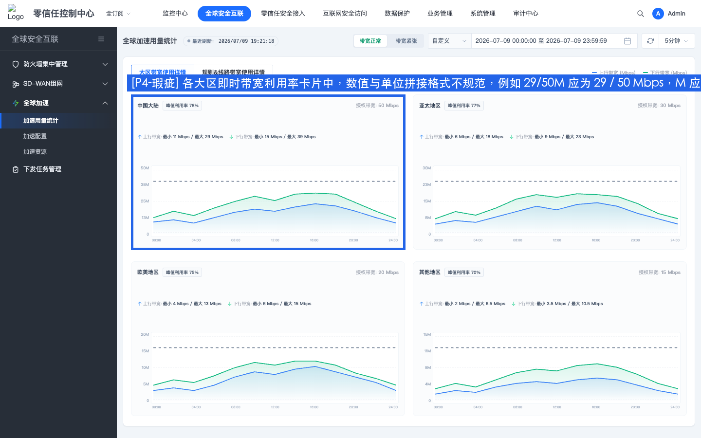

全球加速 GA 体验检视报告
检视场景：带宽用量分析与调整闭环体验检视 | 测试角色：资深网络IT管理员 | 日期：2026-07-07
设计检视定性结论
场景 1：体验目标的达成情况 部分达成（存在断点）
本次检视针对 3 个典型运维旅程及“1分钟内清晰感知并闭环处置线路拥塞”的核心目标进行了走查：
1. 区域告警排查：大区卡片提供了全局利用率和趋势，能较快发现大区拥塞，但缺少快捷过滤和引导。
2. 规则告警排查：规则趋势卡片有良好的状态感知和抽屉入口，管理员可以通过点击规则名称打开抽屉直接调整节点带宽，此部分流程能够闭环。
3. 体验差排查与线路调整（核心断点）：具体线路详情列表中，线路卡片完全是只读状态，且未提供跳转到规则配置抽屉的链接。当管理员发现具体某条线路拥塞时，无法一键点击关联规则进行编辑，也无法在卡片内直接调整，导致定位到处置的 MTTR 路径被拉长，未完全达成“快速对线路做出带宽调整”的极致目标。
场景 3：基于体验愿景的方案提质 有待改善
1. 闭环自愈理念：SASE 产品的核心体验愿景之一是“极致闭环与智能自愈”。当前方案从发现专线紧张到去抽屉调整配额，仍然偏向人工找入口，且“具体线路”与“加速规则”之间的跳转缺失，没有形成顺畅的交互闭环。
2. 设计模式一致性（核心问题）：页面上方“规则卡片”已经具备了非常清晰的“峰值利用率指标 + 红黄绿状态 Badge”设计模式；但“线路卡片”却没有复用这一设计语言，仅展示了绝对值，违背了 SeerDesign 5.0 规范的一致性原则。
3. 文案与规范：全文多处物理单位拼写不合规（如简写为“M”、缺失“Mbps”），阻碍了界面的高级感和专业度。
最终检视结论 综合评级：良好 (B) - 扣分后得分 86.0 分
页面整体视觉层次和 SeerDesign 5.0 的暗色调框架契合度高，图表交互设计精细。若能复用已有的规则 Badge 模式到线路卡片上，并在线路卡片中补充关联规则的点击跳转/直接修改闭环入口，便能真正达成“1分钟内极速响应与处置”的体验目标。

【P2 较重】线路卡片缺少直观带宽调整入口，跨组件修改路径较长
建议改进方案
1. 建议在线路卡片的加速规则标签（如“POL-002”）增加点击事件，支持在点击后直接拉起对应规则的加速区域配置抽屉，形成交互闭环。2. 在线路卡片的右上角或底端增加快捷操作入口，点击可直接定位或链接至对应的编辑策略面板。

【P2 较重】线路详情列表缺少带宽利用率直观指标与拥塞状态标识
建议改进方案
页面上方的“规则趋势”卡片已实现利用率与状态 Badge 标签的设计模式，建议**复用此设计语言，将相同的设计模式应用至底部线路卡片**：1. 在线路卡片的标题旁，增加一行醒目的“当前峰值利用率：XX%”的文本。
2. 为利用率引入红黄绿三色 Badge 语义状态标签（如：利用率 > 100% 显示红底“已超限”，80%-100% 显示黄底“高负载”，< 80% 显示绿底“正常”）。
3. 在列表顶部筛选栏提供“仅显示紧张线路”的快捷过滤器，或支持按“利用率降序”默认排序，让高危拥塞线路首屏置顶展示。

【P3 轻微】全局拥塞告警卡片缺少扩容/优化快捷入口
建议改进方案
1. 建议在全局用量状况卡片中，对于“专线紧张”状态，增加【查看拥塞线路】快捷链接，一键过滤大区为欧美地区并显示线路列表。2. 增加【扩容授权带宽】的快捷按钮，点击直接拉起授权管理弹窗或购买页面，支持快速申请或追加该大区的授权带宽上限（Watermark）。

【P4 瑕疵】带宽指标物理单位及数值格式不规范，缺少空格与简写规范
- 顶部各大区卡片中，展示当前带宽与授权上限时拼写为 “29/50M”，缺少单位 “Mbps” 且数值/单位间无空格。
- 大区详情图表的纵坐标使用 “50M”、“38M”、“25M”、“13M” 形式，同样缺少空格，且直接用字母 “M” 容易与 “MB” 混淆。
- 线路详情卡片的上/下行最大带宽物理单位缺失（如：“最小 5.0 / 最大 14.8”）或者拼接成 “20M”。
- 刷新组件的时间选择为 “1分钟”，未按照规范增加数值和物理单位之间的空格。
建议改进方案
按照 Checklist 规范，全文统一物理/时间单位与数值之间的空格与拼写：1. 将所有的 “M” 规范为 “ Mbps”（注意保留空格，例如：“29 / 50 Mbps”，“50 Mbps”）。
2. 线路卡片中的上/下行描述修改为：“最小 5.0 Mbps / 最大 14.8 Mbps”，且数值与单位之间带有空格。
3. 将刷新时间修改为 “1 分钟”、“5 分钟”、“10 分钟”。
体验评分规则定义说明
| 问题等级 | 单项扣分 | 扣分上限 | 等级说明 | 特征 |
|---|---|---|---|---|
| P1 (严重) | 10分 | 无上限 | 核心任务流断裂，用户完全无法完成目标或存在重大合规风险。 | 影响核心功能可用性、阻塞性问题、安全违规。 |
| P2 (较重) | 5分 | 无上限 | 显著降低核心功能操作效率，引发强烈挫败感，影响产品信任度。 | 需多次尝试或外部帮助、高频使用场景障碍。 |
| P3 (轻微) | 2分 | 无上限 | 轻微干扰体验，用户可自学习或绕行完成任务，不影响目标达成。 | 次要功能障碍、视觉/交互不一致。 |
| P4 (瑕疵) | 0.5分 | 最多扣3分 | 细微体验瑕疵，仅影响美观或极少数场景，不影响功能决策。 | 仅影响视觉细节或动效、特定条件触发。 |